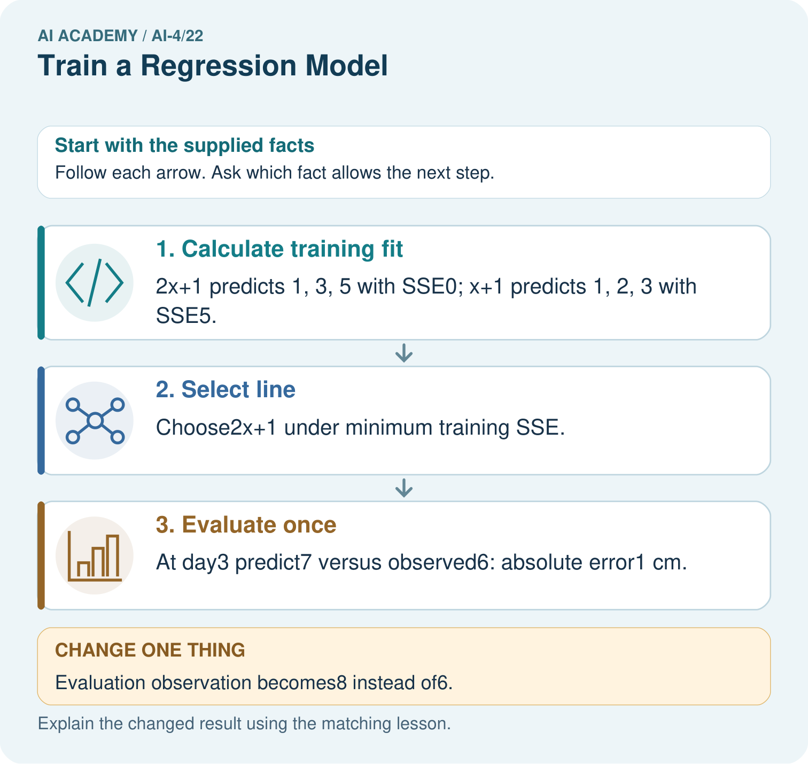
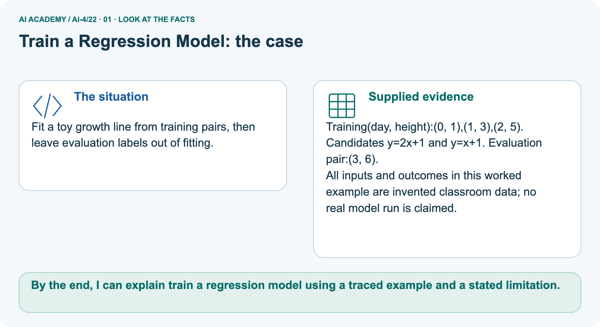
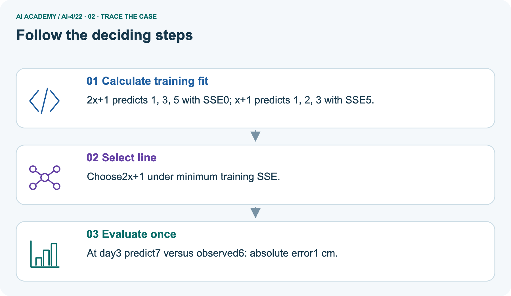
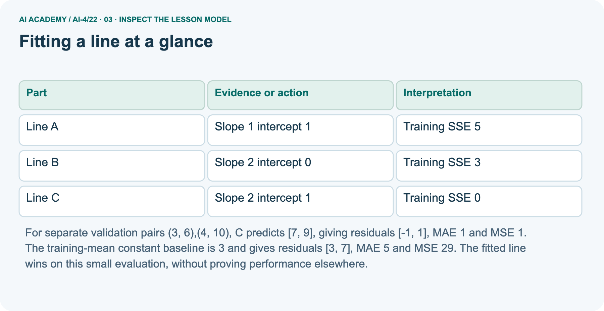
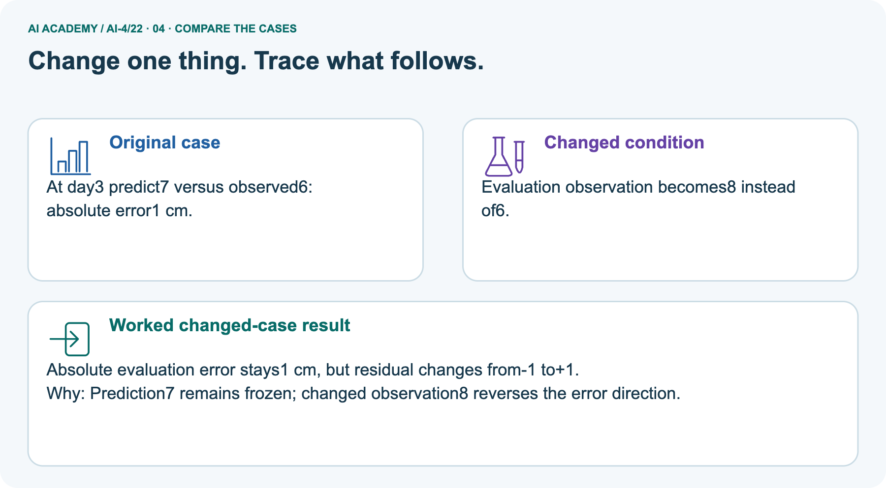
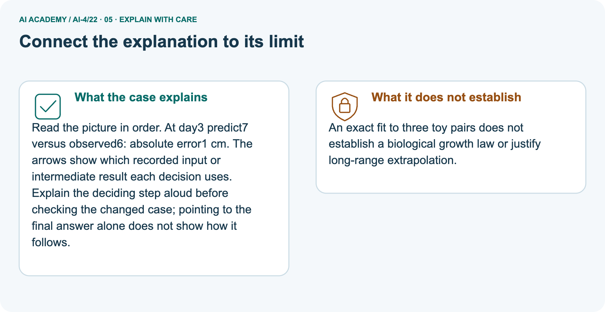
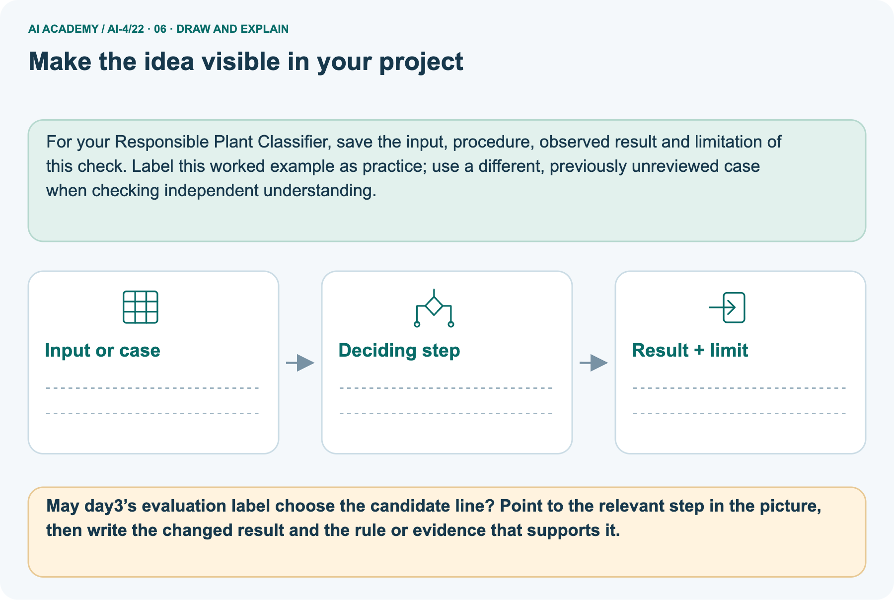

AI Academy · Level 4 · Grade 9 · Week 22 · Teacher guide
Train a Regression Model
Learn to understand, design, build, test and explain AI systems responsibly.
Project: Responsible Plant Classifier
Teacher guide · 1 of 10
Train a Regression Model
Prepare Train a Regression Model: check the target, prerequisites, resources and adaptable teaching schedule.
Teach the learning cycle
Primary target: Fit a line from a declared training candidate set
| Session | Sequence and minutes | Resources |
|---|---|---|
| Session 1 · Understand · 45 min | 0–7: recall and prerequisite; 7–15: inspect the concrete case and predict; 15–30: teacher models the worked trace; 30–40: learners explain a step using the text and visual; 40–45: check the core idea. | Sections 1–6; record the brief recall in the workbook. |
| Session 2 · Practise · 45 min | 0–5: retrieve the procedure; 5–15: W2 completion practice; 15–23: explain and check with a partner; 23–30: each learner answers the misconception check; 30–40: targeted reteaching or a harder variation; 40–45: prepare the investigation. | Sections 7–10; use the matching workbook W2 and misconception check. |
| Session 3 · Investigate and transfer · 45 min | 0–5: retrieve the decision rule; 5–20: investigate or trace; 20–30: start the independent case; 30–38: connect the project; 38–43: act on feedback; 43–45: plan the return check. | Use “Run the investigation”, “Connect your project”, “Show what you know”, “Study a complete case” and “Try a new case independently”. Give extra time for the full task set. If this week has a coding lab, use its named section; section numbers can change when extra explanations are included. |
This is a starting allocation of 135 minutes, not a validated duration. Preserve all named topics. Schedule extra time for connected examples, the full investigation, independent cases and project building.
Repeated copies of a case share one recorded attempt; they are not new evidence.
Retrieval answer guidance
Absolute Error and MAE
Without opening the old lesson, explain one key idea from Absolute Error and MAE. Give an example and a mistake that the idea helps you avoid.
Look for: Calculate MAE MSE and RMSE
Reference example, not the only acceptable wording: Teacher explanation: (1+2+3)/3=2 cm.
Regression and Residuals
Without opening the old lesson, explain one key idea from Regression and Residuals. Give an example and a mistake that the idea helps you avoid.
Look for: Distinguish numeric prediction from classification
Reference example, not the only acceptable wording: Teacher explanation: Residuals -1, 1, 0 cm; the first record is overpredicted.
Accuracy and Imbalance
Without opening the old lesson, explain one key idea from Accuracy and Imbalance. Give an example and a mistake that the idea helps you avoid.
Look for: Explain why overall accuracy can hide failure on a less common class
Reference example, not the only acceptable wording: The training-majority rule always predicts clear. Matrix [[16,0],[4,0]] gives 16/20=80 percent, FP=0,FN=4.
It misses all four blocked cases, so the overall score hides complete failure on that evaluated class.
Use the student module and workbook section with this exact week title. The worked case, independent question and answers below form one aligned lesson sequence.
What the learner must demonstrate
Training points (x,y)=(1,3),(2,5),(3,7). Compare y=x+1 and y=2x+1 by training MAE; select one, then predict held-out x=4, actual=10. Explain what was fitted.
Concept to explain
A fitted relationship should be interpreted, tested on unseen values, and compared with a simple baseline.
| Term | Meaning |
|---|---|
| coefficient | learned relationship weight |
| intercept | prediction when inputs are zero |
| slope | predicted change per input unit |
| generalization | performance on unseen cases |
Prepare the class
Use the supplied scenario, student illustrations and blank paper. For numeric work, offer counters or a calculator after learners show the setup. Fictional records are supplied; personal data and paid accounts are unnecessary.
Alternative compact allocation
This compact option is not the full-week schedule. Use the main teaching cycle and allow extra sessions for the investigation, independent work and project.
Allow 80 minutes: recall 8; explanation 12; worked demonstration 15; guided practice 20; independent assessment 15; project and reflection 10. Extend the lab into a second session when needed.
Preparation for the connected explanation
Teach two 45-minute sessions. This week focuses on fitting a line. Model the worked example first, collect the new W 4 case independently before feedback, and use the fresh retry to check transfer.
Award credit for traceable reasoning and bounded claims, including justified uncertainty.
Readiness answer
Square each residual, sum, then divide by the number of evaluated examples.
Printed student lesson and workbook
Paper, pencils and a calculator for fractions
The fictional examples and a blank evidence table
Optional Python 3 editor; no external packages or AI accounts required
End goal for the pictorial case
By the end, I can explain train a regression model using a traced example and a stated limitation.
This added worked case illustrates the week’s main idea. Retain all original and connected topics; schedule its practice within the teaching cycle.
Teacher guide · 2 of 10
Explain the mechanism
Model Train a Regression Model using the supplied case, labelled mechanism and reasoning. Make the scope of each conclusion explicit.
Trace the information, fitted behavior, and evaluation proof separately.
Question to explain
QUESTION Run a starter regression and explain slope, prediction, residual, and MAE.
MODEL IDEA A fitted relationship should be interpreted, tested on unseen values, and compared with a simple baseline.
PROOF NEEDED Use an unseen case, visible calculation, error analysis, and a stated limitation.
How the mechanism works
UNDER THE HOOD Model predicts height = 4 + 2 × weeks. Slope 2 means two predicted centimeters per additional week in this data range.
Draw a fresh data → model → prediction → evaluation trace:
Predict first. Then check each step. A correct answer without visible evidence cannot be audited.
Step 1
STEP 1 Model predicts height = 4 + 2 × weeks.
Step 2
STEP 2 Slope 2 means two predicted centimeters per additional week in this data range.
Step 3
STEP 3 At week 5, prediction is 14 cm; if actual is 16, residual is +2 cm.
Step 4
STEP 4 Evaluate unseen plants and compare test MAE with the median baseline.
CHECK Verify the denominator, unit, split, class definition, and data version before interpreting a score.
Recalculate, retrace, or restate the evidence independently:
Concrete teaching case
The teaching case
Supplied fitted rule: height=2 times age+1. Held-out observations are (3,8),(4,9).
The teaching case
Predict and evaluate; distinguish inference.
Exact explanation to model
Why the result follows
Predictions 7,9; errors 1,0; MAE=.5 cm. Applying a supplied equation does not show how it was fitted.
Explain the added worked example
A line predicts y as m*x+b. In this classroom search we compare a small declared set of slopes and intercepts; this is not a full least-squares solver over all possible lines.
Use training error to choose a candidate, then freeze it before validation.
Use fictional classroom data throughout this investigation. Keep the task, units, reference labels and data split visible as you reason. Earlier weeks supplied the model-building process; this week examines fitting a line.
Training pairs are (0, 1),(1, 3),(2, 5). Candidate A has m 1 b 1, B m 2 b 0, C m 2 b 1. Predictions are A [1, 2, 3], B [0, 2, 4], C [1, 3, 5]. Training squared-error sums are 5, 3, 0 respectively, so choose C.
Ties would use the earlier listed candidate.
Trace the calculation on paper before running this optional Python check. Use the stated fictional inputs and compare intermediate values. The code checks this example; your independent workbook case uses different evidence.
Key terms
| Term | Meaning |
|---|---|
| Slope | Change in predicted target per unit change in x |
| Intercept | Predicted target when x is zero |
| Candidate set | The declared model choices searched |
| Fitting | Selecting model values using training evidence |
Model the reasoning aloud
Use the complete worked example below before asking learners to complete W2. Reveal a small part, invite a prediction, then explain the deciding step.
These teacher notes contain solutions; do not reveal the independent case answer during modelling.
Fitting a line at a glance
| Thinking move | Teacher prompt |
|---|---|
| Plan | What is given? What is the question? Which procedure fits these facts? |
| Do | Point to each input and intermediate step in the worked trace. Name the rule that allows the next step. |
| Check | Does the output answer the question? Which assumption or limitation prevents a larger claim? |
Use the diagram and verbal explanation together. Ask learners to match a sentence to a specific visual step; do not assign learners fixed visual or auditory learning styles.
A pictorial worked case: Train a Regression Model
Fit a toy growth line from training pairs, then leave evaluation labels out of fitting.
The facts we will use
Supplied facts
Training(day, height):(0, 1),(1, 3),(2, 5). Candidates y=2x+1 and y=x+1. Evaluation pair:(3, 6).
Supplied facts
All inputs and outcomes in this worked example are invented classroom data; no real model run is claimed.

Read the picture one step at a time
Why this result follows
Why the result follows
Read the picture in order. At day3 predict7 versus observed6: absolute error1 cm. The arrows show which recorded input or intermediate result each decision uses.
Explain the deciding step aloud before checking the changed case; pointing to the final answer alone does not show how it follows.
What this example does not establish
Keep the stated limit
An exact fit to three toy pairs does not establish a biological growth law or justify long-range extrapolation.
Change one thing in the pictured case
Change one thing
Change: Evaluation observation becomes8 instead of6.
Predicted result
Prediction: Absolute evaluation error stays1 cm, but residual changes from-1 to+1.
Why the result follows
Reason: Prediction7 remains frozen; changed observation8 reverses the error direction.
Ask while showing the picture
Ask while showing the picture · 1
Cover the result. Ask learners to name the inputs and predict the next step. Uncover one step, connect the icon to the actual procedure, and explain its evidence. Then change the supplied condition and compare.
The picture is a representation; it does not document execution of a real AI model.
Teacher guide · 3 of 10
Demonstrate and guide practice
Demonstrate Train a Regression Model, reduce support deliberately and check individual reasoning before discussing answers.
Choose the pacing route
Compact alternative: this two-session sequence covers selected core tasks. Use the three-session weekly plan for the full lesson, independent transfer, feedback and project work; allow extra time for extensions.
Board sequence
1. Put the facts on the board
Write the given facts: Supplied fitted rule: height=2 times age+1. Held-out observations are (3,8),(4,9).
2. State the decision to explain
Write the question to explain: Predict and evaluate; distinguish inference.
3. Reveal the worked reasoning
Reveal after predictions: Predictions 7,9; errors 1,0; MAE=.5 cm. Applying a supplied equation does not show how it was fitted.
Hold back the independent task
Keep for an independent attempt: A regression model has validation MAE 2.4 cm; a training-mean baseline has validation MAE 2.0 cm on the same examples. Which performs better on this metric?
Classroom dialogue
Ask the class
Ask: Which facts are given, and which would we have to assume? Learners mark relevant details before discussing answers.
Language to model
Say: Predict first. Show the rule, information path or calculation that would produce the result. A correct guess is not yet an explanation.
Reveal reasoning one step at a time. Explain why a tempting alternative fails. Write units and denominators for arithmetic, trace conditions for decisions, and identify supporting sources for claims.
In pairs, one learner solves while the other checks evidence; exchange roles. Remove the worked answer before independent assessment.
Model these guided questions
Guided response: Predictions 7, 9; residuals -1, 1; MAE 1 MSE 1. Exit response: Training covers a limited range; the relationship and conditions may change outside it.
Case-specific teaching sequence
| Stage | Teacher action |
|---|---|
| Session 1 start to 7 minutes | Use the prerequisite question: How is MSE calculated? Check the explanation before proceeding. |
| 7 to 18 minutes | Read the opening and model the worked evidence. Ask students to identify slope in context. |
| 18 to 32 minutes | Complete W 1 and W 2 with support: trace candidates; score validation. Require the evidence, not only the final response. |
| 32 to 45 minutes | Read the visual row by row. Collect the guided explanation and compare reasoning in pairs. Trace the Python check after the paper calculation. |
| Session 2 start to 8 minutes | Retrieve the distinction between slope and intercept. Invite a counterexample to an overconfident claim. |
| 8 to 20 minutes | Discuss the application and complete W 3: Fit the training constant and score it on validation. |
| 20 to 35 minutes | Collect W4 independently before giving hints. Assess these outcomes: Fit a line from a declared training candidate set; Separate training loss from validation comparison. Record any support used. |
| 35 to 45 minutes | Use W 5 and the exit response to assess limits. Give targeted feedback, then the fresh retry. Save evidence of independent understanding. |
Reduce help deliberately
Completion practice
Completion task: Predict at x 3 and x 4 and calculate MAE/MSE.
Reasoning to listen for
Teacher check: Teacher explanation: Predictions 7, 9; residuals -1, 1; MAE 1 MSE 1.
Start by identifying the given inputs together. Leave the intermediate steps blank. If needed, model one step, then withdraw that help on the next step. Move to a full trace only when the partial trace is understood.
For partners, alternate explainer and checker; collect a response from every learner before discussion.
Individual reasoning check
Use the worked case for Fitting a line. Proposed explanation: “A final answer is enough”. Decide whether this explanation is supported. Point to the step or supplied fact that decides; explain your repair if needed.
Expected repair
Expected correction: Ask for the relevant counts, units, procedure or saved record. For this week: A 5 B 3 C 0; choose m 2 b 1.
Collect explanations, not only yes/no votes. If a misunderstanding is common, re-model the relevant step for the class.
If it affects a few learners, give a short targeted group explanation while others solve a more demanding variation.
Pictorial practice question
May day3’s evaluation label choose the candidate line? Point to the relevant step in the picture, then write the changed result and the rule or evidence that supports it.
Reasoned teacher answer
No under this fitting plan. Keep evaluation evidence separate and report the frozen line’s1 cm error. Changed-case check: Absolute evaluation error stays1 cm, but residual changes from-1 to+1.
Prediction7 remains frozen; changed observation8 reverses the error direction.
Changed-case reasoning: Absolute evaluation error stays1 cm, but residual changes from-1 to+1. Prediction7 remains frozen; changed observation8 reverses the error direction.
Collect each learner’s explanation before discussion. Use the first missing connection between input, deciding step and result to choose support. This question is worked-case practice, not fresh mastery evidence.
Teacher guide · 4 of 10
Run the weekly evidence lab
Run the Train a Regression Model investigation and use the first unsupported step to choose a teaching response.
Keep the test conditions fixed, record every result, and change only one planned factor.
1. Write the hypothesis and expected evidence before running.
2. Regression Run: trace code, interpret coefficients with units, predict unseen values, and compare MAE with baseline.
3. Run one normal, one boundary, one missing, and one shifted case.
4. Calculate the metric from raw counts or row-level errors.
5. Interpret what changed, what did not, and what remains unsafe or unknown.
Make the lab runnable
Use the concrete case as the shared normal case and the independent question as a second case. Each pair creates a boundary or missing-information case and predicts its result before testing.
Keep the expected result separate from an observed mistake.
| Record | What to capture |
|---|---|
| Input or evidence | Exact data, instruction or claim |
| Expected result | Answer or safe fallback declared before the run |
| Observed result | Actual result, including errors |
| Explanation | Rule, calculation or evidence explaining the outcome |
| Next test | One justified change and a new prediction |
Diagnose and reteach
MISCONCEPTION TO REPAIR A positive slope proves one variable causes the other.
For guessing, return to given facts and request a trace. For vocabulary without application, use one example and one non-example. For arithmetic errors, check the setup before the calculation.
Finish with a different uncoached case before recording mastery.
Address these additional misconceptions
A final answer is enough: Ask for the relevant counts, units, procedure or saved record. For this week: A 5 B 3 C 0; choose m 2 b 1.
A stronger claim makes a stronger project: Training covers a limited range; the relationship and conditions may change outside it.
The new case can be copied from the example: The independent task changes the evidence. Require a fresh explanation: SSE 5, 3, 0 selects m 3 b 2. Predictions 11, 14; residuals -1, 1; MAE 1.
Match the support to the first error
| What the response shows | Next teaching action |
|---|---|
| Missing or misread facts | Read the case aloud, mark supplied versus unknown facts, and let the learner restate it. |
| Wrong procedure | Return to the deciding step in the worked case. Contrast it with the proposed incorrect explanation. |
| Arithmetic or implementation error | Trace intermediate values or lines; preserve the first mismatch and retry that step. |
| Correct result without a reason | Ask for a trace and a changed case before marking independent understanding. |
| An unsupported wider claim | Ask which supplied evidence supports the claim and which further observation would be needed. |
Offer an oral explanation, drawing, enlarged visual or fewer examples when that removes a reading/writing barrier. Keep the same reasoning goal.
Stretch secure learners by changing a boundary or assumption and asking them to defend the effect, not simply by assigning more of the same questions.
Teacher guide · 5 of 10
Assess and explain the answers
Use the Train a Regression Model questions, teacher keys and criteria after the relevant attempts. Previously discussed cases are practice; protect the separately selected independent task.
Worked case answer
Teacher key · Worked case answer
Predictions 7,9; errors 1,0; MAE=.5 cm. Applying a supplied equation does not show how it was fitted.
Independent question
Independent question · withhold the key
A regression model has validation MAE 2.4 cm; a training-mean baseline has validation MAE 2.0 cm on the same examples. Which performs better on this metric?
Expected independent answer
Teacher key · Expected independent answer
The baseline is better because lower MAE is preferable: 2.0 < 2.4 cm. Investigate the model before claiming improvement.
What counts as evidence
| Criterion | 0 points | 1 point | 2 points |
|---|---|---|---|
| Result | Incorrect or absent | Partly correct | Correct with necessary conditions |
| Reasoning | No supporting trace | Some steps | Clear mechanism, calculation or source support |
| Limit | Overclaims certainty | Vague limitation | Relevant uncertainty or missing fact |
| Transfer | Copies without adapting | Adapts with prompts | Solves a changed case independently |
Use 6/8 as a classroom checkpoint, with 2 required for both Result and Reasoning. This is a proposed teaching rule, not a validated certification threshold.
Do not count a coached answer as independent mastery; correct unsafe or unsupported claims regardless of total.
Feedback
Ask the learner to find the evidence that challenges this claim: “A trained model necessarily outperforms a simple baseline.” Keep the first attempt and an uncoached retry separate.
Original transfer answer
Teacher key · Original transfer answer
First model errors are 1,2,3, MAE=2; second errors are 0,0,0, MAE=0. Select 2x+1. Test prediction=9 and absolute error=1.
This selects among two supplied candidates; it is not a derivation of unrestricted linear-regression fitting.
Explanations for the additional workbook examples
W1 Trace candidates
Workbook question · W1
Give the three training SSE values and selected line.
Teacher reasoning · W1
Teacher explanation: A 5 B 3 C 0; choose m 2 b 1.
W2 Score validation
Workbook question · W2
Predict at x 3 and x 4 and calculate MAE/MSE.
Teacher reasoning · W2
Teacher explanation: Predictions 7, 9; residuals -1, 1; MAE 1 MSE 1.
W3 Compare the baseline
Workbook question · W3
Fit the training constant and score it on validation.
Teacher reasoning · W3
Teacher explanation: Training mean 3; residuals 3, 7; MAE 5 MSE 29.
W4 Apply independently
Workbook question · W4
Training (0, 2),(1, 5),(2, 8). Candidates m 2 b 2, m 3 b 1, m 3 b 2. Select by SSE, then score (3, 10),(4, 15) with MAE.
Teacher reasoning · W4
Teacher explanation: SSE 5, 3, 0 selects m 3 b 2. Predictions 11, 14; residuals -1, 1; MAE 1.
W5 Limit extrapolation
Workbook question · W5
Why is an exact training line not proof of correct predictions at x 100?
Teacher reasoning · W5
Teacher explanation: Training covers a limited range; the relationship and conditions may change outside it.
Assess independent transfer
Independent question · withhold the key
Selected case: Training (0, 2),(1, 5),(2, 8). Candidates m 2 b 2, m 3 b 1, m 3 b 2. Select by SSE, then score (3, 10),(4, 15) with MAE.
Selected case answer
Teacher key · Selected case answer
Teacher explanation: SSE 5, 3, 0 selects m 3 b 2. Predictions 11, 14; residuals -1, 1; MAE 1.
| Dimension | Evidence required |
|---|---|
| Explanation | Names the applicable idea or procedure and ties it to the supplied facts. |
| Trace and result | Preserves the given inputs and shows the relevant intermediate steps; distinguishes a prediction from an observed execution. |
| Limits | States the assumptions, missing evidence or conditions under which the result would change. |
Teacher key · Selected case answer
Record each dimension as not yet, with support, or independent. Accept a valid alternative procedure with a defensible trace.
Do not penalise an honestly recorded model failure if the learner correctly explains its evidence and limits.
Feedback that the learner uses
Name the earliest unsupported step and give one action to repair it. Have the learner make that repair now and explain why. Then assess the relevant skill on a fresh, fully specified case.
Confirm it was not previously practised with feedback; solve and check the new case before assigning it. A follow-up design prompt is a starting brief, not automatically an equivalent test.
Teacher guide · 6 of 10
Connect and extend learning
Connect Train a Regression Model to Responsible Plant Classifier, adapt support and plan a later changed-case check.
Responsible Plant Classifier
Add the regression experiment to the project appendix only as a separate, clearly limited model.
Keep the decision, input, result, explanation and remaining limitation in the project evidence record. Retrieve this record next week rather than restarting the project.
Support and stretch
Use a tiny labelled dataset, explicit units and a named positive class. Stretch: require a baseline, held-out evaluation and subgroup or shifted-condition analysis with denominators.
Exit reflection
Ask for one decision the learner can now justify and one situation requiring more evidence or human review. Confidence ratings are separate from correct independent performance.
Bridge to the next week
Next: Week 23: Hold Out Test Data. Retrieve today’s evidence and identify what carries forward and what is new.
Support and fresh reassessment
Provide a blank evidence table and allow a verbal explanation before writing. Highlight the given conditions without supplying the W 4 conclusion. Use slope and intercept in full sentences.
Extension: alter one condition in the worked example and explain which conclusion changes and which remains supported.
For independent W 4, require: SSE 5, 3, 0 selects m 3 b 2. Predictions 11, 14; residuals -1, 1; MAE 1. Fresh retry training (0, 0),(1, 2),(2, 4), candidates m 1 b 0 and m 2 b 0: SSE 5 and 0.
At validation (3, 7), chosen prediction 6 gives residual 1. Mark each criterion as independent, supported or not yet demonstrated. Reassess the reasoning after feedback; do not replace the first attempt silently.
Next week: Validation and model selection. Carry forward the saved evidence and the distinction between development choices and justified claims.
Plan the delayed return
Suggested return points in this level: ai-4/23, ai-4/25, ai-4/28. Use actual classroom dates, adjusting for holidays and gaps. One, three and six teaching weeks are scheduling choices, not a claimed optimal spacing.
At a delayed check, ask for the idea from memory and a changed application. Compare with the earlier independent response and record support used.
For a new level, revisit the previous capstone before checking the new prerequisites.
| Record | Teacher evidence |
|---|---|
| Learner code and date | |
| Concept and case used; prior exposure | |
| Explanation / trace / limits | |
| Support and first repair | |
| Changed case and delayed outcome | |
| Next teaching action |
Use the evidence to choose reteaching or the next step. A completed page, confidence rating or attractive project does not by itself demonstrate understanding.
Project evidence from this case
For your Responsible Plant Classifier, save the input, procedure, observed result and limitation of this check.
Label this worked example as practice; use a different, previously unreviewed case when checking independent understanding.
Teacher guide · 7 of 10
Fit and test a straight-line regression model
Use the supplied Train a Regression Model task to record your reasoning, evidence and next step.
Estimate slope and intercept from training pairs using least squares. Ages are weeks and heights are cm. Test targets are excluded from fitting; training ages must include distinct values.
"""Fit a line to training pairs and evaluate a separate example."""
train = [(1, 3), (2, 5), (3, 7)]
if not train:
raise ValueError("Training examples are required")
n = len(train)
x_mean = sum(x for x, y in train) / n
y_mean = sum(y for x, y in train) / n
num = sum((x - x_mean) * (y - y_mean) for x, y in train)
den = sum((x - x_mean) ** 2 for x, y in train)
if den == 0:
raise ValueError("Distinct training ages are required")
slope = num / den
intercept = y_mean - slope * x_mean
test = [(4, 10)]
if not test:
raise ValueError("Test examples are required for MAE")
preds = [slope * x + intercept for x, y in test]
mae = sum(abs(y - pred) for pred, (x, y) in zip(preds, test)) / len(test)
print(slope, intercept, preds, mae)
Expected output: 2.0 1.0 [9.0] 1.0
The fitted line is height = 2 times age + 1. At four weeks it predicts 9 cm; the observed height of 10 cm gives an absolute error and one-case MAE of 1 cm. Fitting a line and applying a supplied line are different activities.
One held-out case is very limited evidence.
Independent code change
Change the held-out height from 10 to 8 without changing the training data. Predict the fit, prediction and MAE.
Teacher answer: Slope 2, intercept 1, prediction 9 cm and MAE 1 cm are unchanged. The residual sign changes under the actual-minus-predicted convention.
Teacher guide · 8 of 10
Prepare, teach and assess
Use this preparation summary alongside the detailed Train a Regression Model lesson; it is a checklist rather than a replacement for the full sequence.
Teaching target
Teaching target: Fit a line from a declared training candidate set
Prepare the labelled worked-case picture, the matching workbook, fictional input cards and a place for individual responses. Check a local Python 3 environment before class; have a paper-trace version ready.
| Session | Plan | Resources |
|---|---|---|
| Session 1 · Understand · 45 min | 0–7: recall and prerequisite; 7–15: inspect the concrete case and predict; 15–30: teacher models the worked trace; 30–40: learners explain a step using the text and visual; 40–45: check the core idea. | Sections 1–6; record the brief recall in the workbook. |
| Session 2 · Practise · 45 min | 0–5: retrieve the procedure; 5–15: W2 completion practice; 15–23: explain and check with a partner; 23–30: each learner answers the misconception check; 30–40: targeted reteaching or a harder variation; 40–45: prepare the investigation. | Sections 7–10; use the matching workbook W2 and misconception check. |
| Session 3 · Investigate and transfer · 45 min | 0–5: retrieve the decision rule; 5–20: investigate or trace; 20–30: start the independent case; 30–38: connect the project; 38–43: act on feedback; 43–45: plan the return check. | Use “Run the investigation”, “Connect your project”, “Show what you know”, “Study a complete case” and “Try a new case independently”. Give extra time for the full task set. If this week has a coding lab, use its named section; section numbers can change when extra explanations are included. |
Before class, solve the supported practice: Predict at x 3 and x 4 and calculate MAE/MSE.
Supported practice answer
Reasoned practice answer: Teacher explanation: Predictions 7, 9; residuals -1, 1; MAE 1 MSE 1.
Check every learner before discussion: Use the worked case for Fitting a line. Proposed explanation: “A final answer is enough”. Decide whether this explanation is supported.
Point to the step or supplied fact that decides; explain your repair if needed.
Repair the misconception
Misconception repair: Ask for the relevant counts, units, procedure or saved record. For this week: A 5 B 3 C 0; choose m 2 b 1.
Support without giving away the answer
Support: read the exact case aloud, enlarge the labelled picture, supply input cards and model only the first deciding step. Accept a spoken explanation or drawing; retain the reasoning goal.
Extend the reasoning
Extension: Evaluation observation becomes8 instead of6. Require a prediction and a reason before comparing. Expected result: Absolute evaluation error stays1 cm, but residual changes from-1 to+1.
Reason: Prediction7 remains frozen; changed observation8 reverses the error direction.
Protect the independent attempt
Independent assessment: withhold the reserved answer until the learner has attempted the new case. Record support separately from correctness.
| Criterion | Not yet | With support | Independent |
|---|---|---|---|
| Explanation | Names an answer without a deciding fact | Uses a hint to link fact and decision | Explains the deciding fact in own words |
| Trace or test | Cannot connect input and result | Completes steps with prompts | Traces or tests a changed case accurately |
| Limits and revision | Claims more than evidence supports | Names a limit after a prompt | States a defensible limit and useful next test |
Project checkpoint
Project checkpoint: Evaluate and revise. Compare with your starting method, explain errors and record a justified revision.
Use the weekly teacher answer for topic-specific reasoning. A saved progress tick is an activity record; judge mastery from the learner’s explanation and evidence.
Teacher guide · 9 of 10
Use feedback, labs and repair paths
Use feedback, earlier review and portfolios purposefully. Apply the coding routine only when this lesson has an executable lab.
Use the two formative questions as supported practice, not as independent mastery scores. Discuss the deciding evidence rather than accepting a guessed selection.
The feedback comes from the reviewed public worked case. Do not reveal the separately reserved independent teacher answer until the learner has attempted that case.
Ask students to predict before running code. Preserve errors and actual outputs; collect a changed test and an explanation. The branch-boundary and indexing lessons deliberately include failure cases.
Use the earlier worked-explanation links to address a specific missing building block, then return to the current question. Adapt this suggestion after observing the learner; it is not an automatic diagnosis.
Collect the completed-work portfolio as evidence. Record support separately from correctness, and assess explanation, trace/test and limitations. Progress ticks and quiz selections alone do not establish mastery.
Teacher guide · 10 of 10
Visual concept journey
Show one Train a Regression Model graphic at a time, request a prediction and discuss its trace before the independent assessment.
Use one picture at a time. Hide a worked result before asking for a prediction, then reveal it for feedback. These are supported teaching cases; retain the separate independent assessment for a fresh first attempt.
01. Train a Regression Model: the case

Fit a toy growth line from training pairs, then leave evaluation labels out of fitting. Supplied facts: Training(day, height):(0, 1),(1, 3),(2, 5). Candidates y=2x+1 and y=x+1. Evaluation pair:(3, 6).
All inputs and outcomes in this worked example are invented classroom data; no real model run is claimed.
Point to the given fact that matters most. Explain why it matters.
Discuss while showing the picture
Teacher prompt: Point to the given fact that matters most. Explain why it matters. Ask learners to describe one label or arrow in ordinary words. Use the adjacent transcript if the image is difficult to see.
02. Follow the deciding steps

Calculate training fit: 2x+1 predicts 1, 3, 5 with SSE0; x+1 predicts 1, 2, 3 with SSE5. → Select line: Choose2x+1 under minimum training SSE. → Evaluate once: At day3 predict7 versus observed6: absolute error1 cm.
Point to each numbered stage and explain which recorded input it uses.
Discuss while showing the picture
Teacher prompt: Point to each numbered stage and explain which recorded input it uses. Ask learners to describe one label or arrow in ordinary words. Use the adjacent transcript if the image is difficult to see.
03. Fitting a line at a glance

Fitting a line at a glance. Line A | Slope 1 intercept 1 | Training SSE 5. Line B | Slope 2 intercept 0 | Training SSE 3. Line C | Slope 2 intercept 1 | Training SSE 0
Read the labels and values. Explain the relationship the model shows.
Discuss while showing the picture
Teacher prompt: Read the labels and values. Explain the relationship the model shows. Ask learners to describe one label or arrow in ordinary words. Use the adjacent transcript if the image is difficult to see.
04. Change one thing. Trace what follows.

Original case: At day3 predict7 versus observed6: absolute error1 cm. Changed condition: Evaluation observation becomes8 instead of6. Expected result: Absolute evaluation error stays1 cm, but residual changes from-1 to+1.
Reason: Prediction7 remains frozen; changed observation8 reverses the error direction.
Predict before checking the worked changed-case result. Name what changed and what the supplied facts allow you to conclude.
Discuss while showing the picture
Teacher prompt: Predict before checking the worked changed-case result. Name what changed and what the supplied facts allow you to conclude. Ask learners to describe one label or arrow in ordinary words.
Use the adjacent transcript if the image is difficult to see. Changed-case reasoning: Prediction7 remains frozen; changed observation8 reverses the error direction.
05. Connect the explanation to its limit

Read the picture in order. At day3 predict7 versus observed6: absolute error1 cm. The arrows show which recorded input or intermediate result each decision uses.
Explain the deciding step aloud before checking the changed case; pointing to the final answer alone does not show how it follows.
Limit: An exact fit to three toy pairs does not establish a biological growth law or justify long-range extrapolation.
Explain the case, then point to a limit on the claim.
Discuss while showing the picture
Teacher prompt: Explain the case, then point to a limit on the claim. Ask learners to describe one label or arrow in ordinary words. Use the adjacent transcript if the image is difficult to see.
Keep the stated scope: An exact fit to three toy pairs does not establish a biological growth law or justify long-range extrapolation.
06. Make the idea visible in your project

For your Responsible Plant Classifier, save the input, procedure, observed result and limitation of this check.
Label this worked example as practice; use a different, previously unreviewed case when checking independent understanding. Draw your input, deciding step, result and limit.
Supported question: May day3’s evaluation label choose the candidate line? Point to the relevant step in the picture, then write the changed result and the rule or evidence that supports it.
Draw your project trace and justify the deciding step using evidence.
Discuss while showing the picture
Teacher prompt: Draw your project trace and justify the deciding step using evidence. Ask learners to describe one label or arrow in ordinary words. Use the adjacent transcript if the image is difficult to see.
Supported practice key: No under this fitting plan. Keep evaluation evidence separate and report the frozen line’s1 cm error. Changed-case check: Absolute evaluation error stays1 cm, but residual changes from-1 to+1.
Prediction7 remains frozen; changed observation8 reverses the error direction.